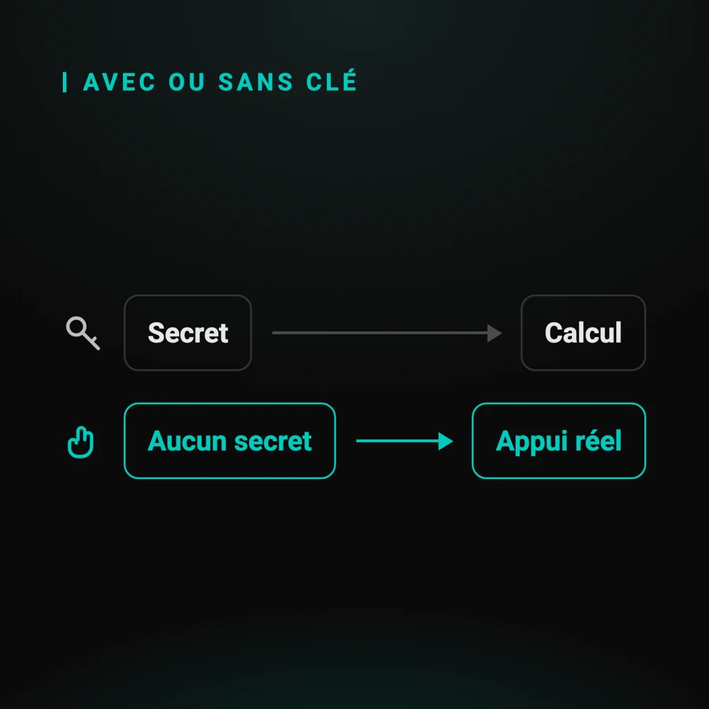

Automatiser la 2FA sans clé secrète partagée
La voie classique consiste à récupérer le secret d'un compte de test pour recalculer son code. Elle marche, et elle suppose deux choses : qu'un secret existe, et qu'on vous le confie. Ce guide traite les parcours où ni l'une ni l'autre n'est vraie.
Par Sylvain Perez, créateur de Q-Bot. Mis à jour le
Pourquoi une clé partagée est-elle un problème ?
Parce que c'est un secret d'authentification comme un autre. Dès qu'il entre dans votre chaîne de tests, il faut le stocker, le distribuer aux agents d'exécution, le faire tourner, et répondre de sa fuite éventuelle. Un code à six chiffres devient une obligation de gestion.
Ce n'est pas une objection de principe : c'est une charge, et elle se paie ailleurs que dans le test.
- il faut le stocker quelque part que vos agents d'exécution puissent lire
- il faut le faire tourner comme n'importe quel secret, avec la procédure qui va avec
- il faut pouvoir dire, en revue, qui y a accès et depuis quand
La page sur la sécurité et les données de test détaille ce qu'une revue demande sur ce point précis.
Que suppose exactement la norme TOTP ?
Qu'un secret a été partagé entre le service et l'appareil au moment de l'enrôlement, et que ce secret plus l'heure courante suffisent à produire le code. C'est écrit dans la RFC 6238, et c'est ce qui rend une bibliothèque capable de remplacer le téléphone.

La RFC 6238 décrit un mot de passe à usage unique fondé sur le temps : le service et l'appareil détiennent la même graine, et chacun calcule le même code au même instant.
Deux conséquences, et la seconde est celle qu'on oublie : si vous détenez la graine, aucun appareil n'est nécessaire ; et si vous ne la détenez pas, aucun calcul n'est possible. Il n'y a pas de troisième cas.
C'est aussi la troisième voie que la documentation de Selenium recommande, et sa condition d'application est exactement celle-là.
Quels parcours n'ont aucune clé à obtenir ?
Ceux où le second facteur n'est pas un code calculé. Une demande poussée sur l'appareil enrôlé, un code affiché seulement dans l'application, un QR code à scanner : dans ces trois cas, il n'existe aucune graine que quiconque puisse vous remettre.
Les trois familles, avec ce qui les caractérise :
- une demande à approuver : le secret ne quitte jamais l'appareil, c'est l'intérêt du dispositif
- un code affiché et rien d'autre : il existe, mais nulle part où votre test puisse le lire
- un QR code : l'information passe par un canal optique, pas par un calcul
Les applications d'identité souveraine relèvent de la première famille : le guide LuxTrust en déroule un cas complet.
Comment franchir l'étape sans clé ?
En appuyant pour de bon. Un téléphone Android relié en USB, piloté par ADB : chaque appui arrive sur l'écran physique, dans la véritable application. Il n'y a rien à calculer, donc rien à détenir, et aucun secret n'entre dans votre chaîne de tests.
Le scénario se construit à la souris sur une capture de l'écran de l'application : des points d'appui numérotés et des temps d'attente, sans écrire de script. Votre test déclenche ensuite le scénario par un appel HTTP.
Le détail des points d'entrée est sur la fiche technique, et les trois approches possibles sont mises côte à côte dans la page de référence.
Périmètre : Android uniquement, pas d'iOS, et un appareil relié par boîtier. Le pilotage repose sur ADB, qui n'a pas d'équivalent sur iPhone.